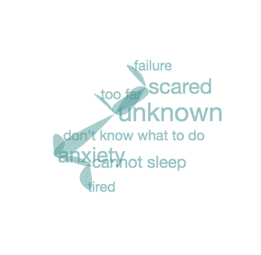

What is a Mindscape?
Mindscapes are the snapshots of our inner world.
When you are standing on top of a mountain, the landscape is expansively spread out in front of you: hills, valleys, rivers, and lakes...
In a similar way, a "mindscape" provides a map so that we can "see" our thinking. It is as if we were standing outside our own thinking and looking at it objectively.
How to Create a Mindscape?
Mindscape is based on Water Logic (1994, Edward de Bono), which metaphorically describes the brain’s thought processes as the flow of water: perpetually flowing from one thought flows to the next, eventually forming a spiral pattern... By mimicking the way our brain is functioning, one’s seemingly chaotic thinking monologue can be reduced to schematics of perceptions, illustrating which are the dominant thoughts and which lead to cyclical patterns.
TRY DEMOStep 1: Stream of Consciousness
Write down anything that crosses your mind around a chosen subject, or about the emotions you are feeling... Let it all out without overthinking or any judgement towards yourself.
... we call this continuous, uninterrupted flow of thoughts the stream of consciousness. The following example tells the story of someone who could not fall asleep at night

Step 2: Flow of Attention
Flow is the motion of thinking. Like water is determined to flow downhill due to gravity, our thinking is driven to move by the focus of attention... different from water, in a mindscape, it is easier for us to go back and see where our thoughts had flown through “physically”. In this step, we step out of our thoughts and discover the relationships between one thought to another.
Moving in the direction of flow, connect one thought to the next — you might find yourself going back to a previous thought and create a loop — until all your thoughts are interconnected. This little excercise is made possible by associative thinking, a skill we can all benefit from in life.

Step 3: Map of Perceptions
Mindscape simplifies complex thoughts into diagrams which help us identify the relationships between thoughts, the patterns in our perceptions.
The most interconnected thought highlighted is called the hub. The hubs are often the most important thoughts we can reflect upon. If the hub is located at the opening of a circle, it indicates where a self-repeating thought pattern starts to form (this is where our thinking gets stuck); this is also the thought that can lead to action of intervention (or breaking the pattern).


Step 4: Journalling
Finally, Mindscape transforms a conventional diagram into a butterfly graph. Butterflies speak for metamorphosis, which symbolizes healing and growth. This abstraction adds a layer of human touch to our personal data and elevates the emotions that our stories carry. More example of the butterfly graphs can be viewed in the Journal page.
